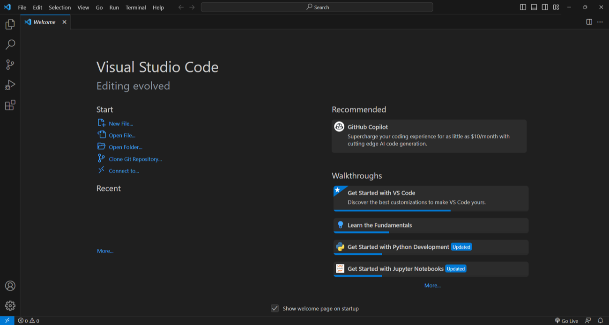
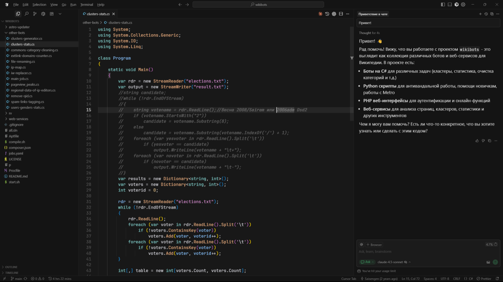
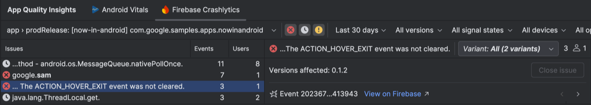

How mobile apps shape a digital city
quick intro
A bit about me
- Informatics at Unhas, class of 2018
- About 8 years at Grab, from an Android intern to Flutter
- Now on the merchant app: how restaurants and shops get their orders
2018
Android intern
2018
first job
2022
Flutter
2026
lead
hands up
Two questions
1
Who used Grab, Gojek or an e-wallet this week?
2
Who used a government or city app this week?
ten years, no new roads
What actually changed
Before
Now
Walk to the pangkalan, negotiate
Open an app, price already fixed
Carry cash everywhere
Pay from your phone
Queue at the shop
Order ahead
Call the seller
Chat inside the app
None of this needed new roads or new buildings. A few apps made daily things easier, and millions of people quietly changed their habits.
what a phone changed
The phone became the front door
getting around
Book a ride, find a route, buy a train or bus ticket, all from one screen
paying
Scan a code at a warung, a mall or a parking gate
eating & shopping
Order food, groceries and parcels without leaving home
city services
Report a problem, request a document, find public services - here in Makassar
none of these needed a new road. they needed an app.
the role of the app
The app is where the city meets people
- It reaches people. One tap, from the phone already in their hand
- It connects what is behind it. Payments, maps, city data and services
- It learns from use. What people tap, and what breaks, feeds back to the teams
the smarter the city, the more of it lives in an app.
Commuters
Shoppers
Residents
The mobile app
Shared rails: payments, maps, city data
Drivers
Warung & toko
City services
so, how does a feature like that actually get built?
Is it one person with a laptop?
Or how does it look inside a big tech company?
let’s zoom into one screen
Who built this screen?
One screen.
Five jobs.
Each of those is a real job, and they all meet on this one screen.
Product
decided to show the price
Backend
calculates that price
Mobile
makes it work on your phone
Design
chose the button and the type
QA
tried to break it first
my day-to-day
Writing code is not most of the week
- A weekly sync with the team
- A few hours a day actually writing code - less than you’d think
- A big chunk reading other people’s code and commenting on it
- Meetings about what to build and how it should look
- Release days spent mostly watching dashboards
writing codetell AI to write this one
reading & reviewing code
deciding what to build
watching what shipped
Code review: before my code reaches users, two other engineers read it and tell me what's wrong. Every single time. That's normal - and it's how you learn fastest.
something that surprised me
Shipping is the middle, not the end
idea
spec
you
write it
review
+ QA
ships
1% of users
crashes?
is it used?
A/B test
fix or
remove
maintain
the part we practise
the part after
The work doesn’t end when the code works. In industry, that’s about halfway.
tool 1 of 5: planning
Deciding what to build
- Work is split into small tickets on a board
- Each ticket moves from backlog to in progress to done
- Everyone, not just engineers, can see where things are
a board like Jira

tool 2 of 5: writing code
Writing it, and seeing it
- An editor like Android Studio or Xcode
- The phone preview updates as you type
- Crash reports from real users can show up right inside the editor
Android Studio, with Xcode on iOS

tool 3 of 5: editors with AI built in
VS Code and Cursor

VS Code, with GitHub Copilot

Cursor, with chat next to the code
Ask in plain language, get a change back, read it before you accept it.
tool 4 of 5: review and checks
Review before it merges
- Others read your change and leave comments
- Automated checks run on every change
- All checks green, then it can merge
GitHub, GitLab or similar

tool 5 of 5: watching
Watching what shipped
- Crashlytics (part of Firebase) collects crashes from real phones
- It groups them, so you see which problem hits the most people
- Then decide: keep it, fix it, or remove it

Firebase Crashlytics, shown inside Android Studio
a mistake on mobile
You can’t fix it in five minutes
a website
bug found
fix it
deploy
fixed
a mobile app
bug found
fix + code review
review
build + upload
upload
store review
review
staged rollout
users update
adoption
everyone fixed
…and some people never update. old versions stay on their phones.
what that changes
So we ship with a way out
- Staged rollout. A small share of users first, then more, while we watch the crashes
- A switch. A feature can be turned off without waiting for a new release
- Careful code. If a payment went through but the reply never reached the phone, the app has to work out what really happened - without charging twice
Code that runs is not always code that’s
right.1%
10%
50%
everyone
kill switch
off without shipping anything new
the feature is live. it’s stable.
So, are we done?
plan
write
review
ship
watch
improve
Not quite. There’s one more job: make it better.
hands up again
Who has deleted an app because your storage was full?
keep your hand up if you can name the app.
0.7 GB free
one more app and something goes
why teams care
Smaller apps
stay installed
When storage is nearly full, the biggest apps are the first to go.
A smaller app downloads faster, fits on more phones, and is less likely to be deleted.
nobody says thank you for a smaller app. it just stays.
once it’s rolled out and stable
Next job: make it faster and steadier
Open fast
How long until you can actually use the app?
measure it on real phones
Stay smooth
Screens that stutter or freeze (“jank”) are felt right away
one slow frame is enough
Stay small
Download size, storage, even battery all add up
people notice on small phones
frames drawn over time: most are quick, a few are slow
that’s a normal week, before AI.
Plan, write, review, ship, watch, improve.
plan
write
review
ship
watch
improve
Now add AI to every step. What changes?
what the job looks like right now
The job in the AI era
Level 0
you drive
write everything
Level 1
cruise control
AI does small pieces
Level 2
autopilot
you and AI, all day
Level 3
you supervise
AI writes, you check
Level 4
you read a book
you describe, then check
Level 5
no driver
a handful of teams
our goal at Grab
we’re still moving toward it
a trap I fall into
Level 2 feels like I’m finished. It isn’t, quite.
The code appears, it runs, you ship it, and it feels like skill.
The check I use:
can I explain why it works?If I can’t, I’m just a passenger - the AI is driving, and I’m still the one responsible for the crash.
level 3 in practice
Level 3: AI writes, I check
I stay in the loop. I decide what to build and I own what gets merged. The AI does a lot of the typing in between.
Spec
me
Implement
AI
Review
AI + me
Merge request
me
Team review
the team
fix, then repeat
That’s roughly how a feature goes from spec to merge request on my team today.
a limit worth knowing
AI can run out too
- You can run out of tokens, and the tool just stops
- Often halfway through the task
- Then it’s back to what you understand yourself
good thing I know why it works.

tokens left
the fair question
If AI can write the code, why are you here for four years?
here’s how I think about it.
what it lets you do that AI alone doesn't
What four years gives you
Data structures & complexity
Know why something is instant with 100 items and frozen with 100,000 - before users find out
Networks
Understand what's really happening between the phone and the server, so you can fix it when it breaks
Databases
Know what you're storing, who can read it, and what happens when two people write at once
Security basics
Recognise that secrets inside an app are public, and that login and permissions aren't the same thing
what it lets you do that AI alone doesn't
And three more
Operating systems & memory
Understand why the phone kills your app in the background, and why it drains battery
Software design
Structure a project so it can still be changed in six months, by someone who isn't you
Testing & debugging
Prove it works - and find out why when it doesn't
I use AI as a tutor for these, not a replacement.
AI knows how.
Knowing why is still on us.
I try to ask it why the code works, not just for the code.
when you skip the why
What breaks, and what was missing
What goes wrong
Which fundamental was missing
The secret password sits inside the app, where anyone can read it
"It works on my laptop" - and nowhere else
Users' data sits in a database open to the world
when you skip the why
And three more
What goes wrong
Which fundamental was missing
Fast with 10 users, unusable with 10,000
The app is killed in the background and loses everything
Something breaks and you have no idea why
take or leave them
A few things that helped me
1
Ship one small thing real people use. Even ten users. One shipped app beats ten tutorial clones.
2
Learn to read code you didn't write. It's most of the job and almost none of your coursework.
3
Get comfortable with the unglamorous parts. Git, code review, testing, debugging - that's what juniors are judged on.
4
Use AI as your tutor, not your replacement. Ask it why, not just what.
5
Practise explaining your choices out loud. Every interview and every review runs on this.
two more things
Not sure you want to code?
Finding that out is useful information, not failure. Teams need people who decide what gets built, who test it, who design it, who explain it.
Same industry, different seat.
What hiring usually looks like
A coding round, a conversation about how you’d structure something, and questions about things you’ve built.
If you feel like trying something
Pick a small problem you run into yourself and try building the simplest fix for it. Hand it to a few people and see how they use it.
Plenty of the apps in your pocket probably started as someone’s small, annoying problem.
Terima kasih - pertanyaan?

Let’s connect
linkedin.com/in/muhrahmatullah
yours